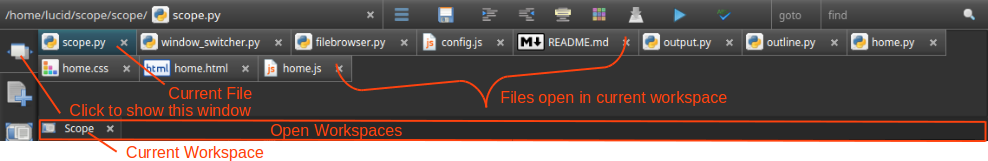
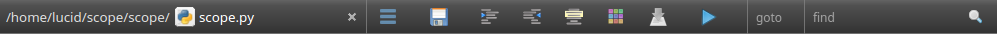
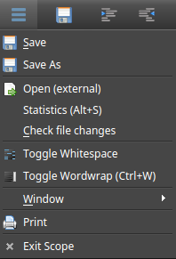

Quickstart
Window Layout
Scope has useful keyboard shortcuts to hide/show parts of the IDE to best utilize screen space. Plugins are easily accessible, yet can stay out of the way.
- F1 - Show/Hide the Open Files (tabs)
- F2 - Show/Hide left plugins
- F3 - Show/Hide right plugins (preview)
- F4 - Show/Hide bottom plugins
- F10 - Hide the left, bottom, and right plugin windows.
- F11 - Full Screen Zen Mode
Tab Window - Viewing open files
Instead of a row of tabs across the top, Scope has a tab window that can show multiple rows of tabs.

- Easily visualize and open more files than a typical tabbar
- Allows for multiple workspaces to be open at once
- Keyboard shortcuts make it faster to go between files
- F1 key will toggle this screen
- Use arrow keys to navigate between open files and press return to select a file
- Use Ctrl+F1 to navigate between open workspaces
- Or click on a file to select it as the current file.
- Click anywhere else in Scope to hide this window or click on the tab window button again
- Note: the files shown in the tab window are files considered open in the workspace, but do not actually open in Scope until you go to one (then it stays open until closed). This is done to minimize resources when a lot of files are open in a workspace.
Toolbar

 Editor Menu - contains additional functions not available elsewhere
Editor Menu - contains additional functions not available elsewhere
- 
- Save As - save the file as something else
- Editor - Functions for the editor including indent, wordwrap, view whitespace and more.
- Window - Show/Hide different parts of the IDE. Full Editor and Full Screen mode area also available here.
- Check file changes - checks if any of the open files have been modified outside this editor. This also checks to see if the file was deleted outside the editor.
- Print - Print the current tab
 Save - Save the current open tab
Save - Save the current open tab Indent - Indent the current line/selection
Indent - Indent the current line/selection- Unindent - Unindent the current line/selection
- Comment - Toggle the current line/selection as commented or uncommented (uses first line of selection to determine
- Color Picker - Select a color and insert the rgb or rgba (if alpha less than 255)
 Run - Run current file (Supported languages: Python, HTML, Markdown by default. You can add your own with the run setting)
Run - Run current file (Supported languages: Python, HTML, Markdown by default. You can add your own with the run setting)- Goto - goto a line (Ctrl + G to focus)
- Find - find text in the editor (Ctrl + F to focus). For more advanced find options use the find/replace plugin.
 Workspaces
Workspaces
Multiple projects can be managed in Scope by using workspaces. Each workspace keeps track of the following:
- Last open files/tabs (on close)
- What editor the file was open with
- The last open file
- The base path of the project (in the file browser)
Workspace settings are automatically saved on close.
Editors/Files
Scope comes with multiple code editors for flexibility with the many languages out there.
- A given file can only be open in one tab
- Ctrl + Tab will toggle through the open editor tabs
- Drag and drop files onto the editor to open them
- Files are saved as utf-8
- Tab indentation is 4 spaces
- Files are NOT automatically saved like some editors are doing.
More Info on the Editors